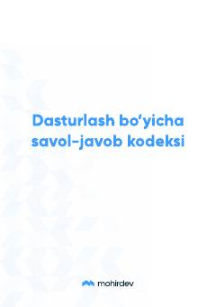

DBDasturlashda to'g'ri savol berish va muloqot qilish qo'llanmasi.
Bu qo'llanma dasturlashni o'rganuvchilar uchun to'g'ri savol berish va onlayn guruhlarda muloqot qilish qoidalarini o'rgatadi. Kitobda eng ko'p uchraydigan xatoliklar misollar asosida tahlil qilinib, savolni qanday to'g'ri va samarali tarzda yozish kerakligi ko'rsatiladi. Shuningdek, yozishmalar madaniyati, kodni to'g'ri formatda yuborish va guruhda muhokama qilish bo'yicha amaliy tavsiyalar berilgan.